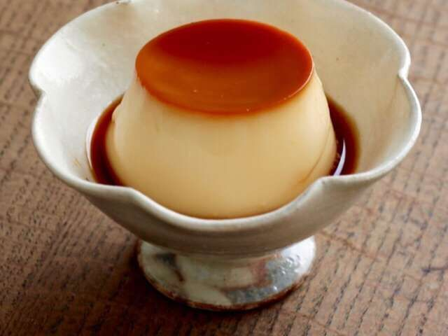

Japanese cutard

Description
Purin is a flan-like cold custard dessert in Japan. The name “Purin” comes from “pudding”, it has a firm
texture similar to Mexican flan and also has caramel sauce on top. It is a very basic sweet—silky, creamy,
rich, and smooth that is served chilled, and adored in Japan. Purin is a comfort dessert for Japanese people.
Ingredients:
- Butter, for the molds
- 3 tbsp warm water
- 6 tbsp sugar
- 2 cups milk
- 2/3 cup sugar
- 1 tsp pure vanilla extract
- 4 large eggs
Steps:
- Butter your individual molds
- Heat 2 table spoons of water in a saucepan, then add 6 tablespoons of
sugar,and simmer until the sauce is browned
- Pour your caramel into the molds
- Put the milk in a medium pan, and heat to about 140° F
- Dissolve 2/3 cup of sugar in the milk, and add vanilla extract
- Remove from heat
- Lightly beat eggs in a bowl
- Gradually add warm milk to the eggs. Careful not to add too much, or you
you will cook your eggs
- Run your mixture through a strainer and remove some bubbles from the top
- Pour your mixture into your molds
- Place your molds in a steamer, and steam on low heat for about 15 to 20
minutes or until cooked through
- Turn off the heat and let them cool, then put them in the fridge for at
least 2 hours
- Remove the purin from the molds and serve on plates